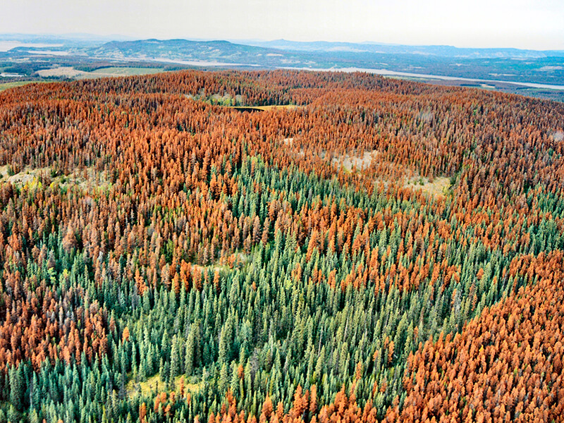
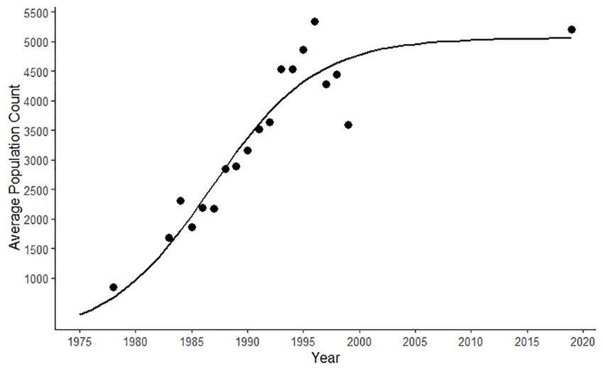
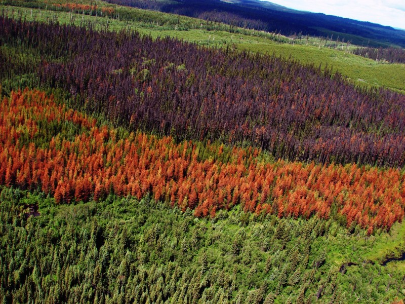

How patterns in nature emerge from dynamic processes that play out over time.

The natural number patterns we encountered in Chapter 1 — the chambers of a sea shell, the patterns in crystal layers, the branching of plants, the rings of a tree trunk, and the culms of bamboo are all physical markers of the natural process of growth and change over time. Underlying each is a rule for growth that is applied like a drum beat, with each passing day, season or year. When we see some unique spatial arrangement or pattern we are seeing snapshot of a process that began in the past and has played out over time. The the key to understanding nature's patterns and how they form is to learn to read and understand nature's dynamical systems that produce the patterns we see.
In this chapter we develop the language of dynamical systems — the mathematical tools for describing how a quantity changes from one moment to the next. We begin our journey with some observations in nature.
Some of nature's patterns grow by adding or accumulating a fixed amount at regular intervals. Tree rings accumulate one per year, their widths a barometer of each season's rainfall and their count is a record of time -- a chronology. The bristlecone pine on the left in Fig. 2.1 is one of earth's longest living trees, and perhaps the most resilient. These trees grow in isolated high altitude rocky environments in the western united states, places were other plants struggle to survive. They grow slowly and endure harsh seasonal variations in temperature and moisture. And they survive all that with remarkable resilience, the oldest recorded living for over 4,500 years. Their longevity makes them ideally suited to be one one of nature's chronometers. By matching the unique ring patterns of living trees with those of ancient preserved wood, natural scientists have pieced together a continuous history reaching back over 9,000 years. This dendrochronological record acts as a standard for time measurement, allowing researchers to calibrate other tools like carbon dating against an unbroken, year-by-year biological calendar.
A parallel example of linear growth through accumulation is found in the layered sediments of glacial lakes, known as varves, as seen on the right of Fig. 2.1. These deposits accumulate in paired layers, one light and silty from the summer melt and the other a dark clay from the winter freeze, stacking like the pages of a geological book. By reading these layers backward through time, scientists can reconstruct ancient climate shifts with annual precision, going back as far as 70,000 years in some cases!
Other examples of linear growth in nature that have much shorter time-scales include the plant internodes in bamboo, which we saw in chapter 1. These grow at roughly constant elongation rates during their brief growth window, leaving a record of their past in their nodes.
Other natural quantities grow by multiplication rather than addition: each step increases or decreases by a fixed multiple of what was there before. Examples that leave a visual record of their multiplicative growth are sea shells, which increase by the same proportion each year, as shown on the left of Fig. 2.2. Other examples with more rapid growth rates playing out over days rather than years include, for example, the rapid growth of duckweed on a pond at the start of each year, or a bacterial colony growing in a rich medium which may double as often as every twenty minutes. Less visible and more mysterious is the decay of radioactive nuclei decay at a rate proportional to how many remain, so the count falls by half in every half-life, whatever number you start with. The prototypical example in nature is the unstable isotope of carbon, ${}^{14}\text{C}$, which is produced in the outer atmosphere by the energetic impact of cosmic rays on nitrogen gas. This carbon is taken up by growing organisms along with the stable ${}^{12}\text{C}$ isotope with a particular proportion that is more or less constant while the organism lives and continues to build itself with carbon. Once the organism dies, the ${}^{14}\text{C}$ decays gradually over time, so the relative proportion changes in a predictable way.
There are limits and exceptions to exponential growth; resources run out, space fills up, predators multiply, populations migrate away. As one example, West coast Harbor Seals in the Salish Sea on the west coast of the United States and Canada reached endangered levels in the 1960 due to over hunting. When the bounty program was eliminated and protective measures introduced, the population rebounded quickly, growing exponentially initially before settling down to a stable population. The census data followed a near perfect logistic S shaped curve predicted by a very simple dynamical system, as seen in Fig. 2.3.

Logistic growth curve for Harbor seals around the San Juan Islands based on counts from aerial surveys between 1970 and 2019 (Jeffries et al., 2003; S. Jeffries, unpublished data).As another example, Cane toads introduced to Queensland Australia in 1935 to control beetles grew rapidly in the region where they were first introduced until reaching a stable local population. Individuals then found their way to new habitats, repeating the pattern of rapid growth followed by stabilization in each new environment, creating a wavefront of growth that progressed across northern Australia, as seen in Fig. 2.4 below:
One of the most canonical discoveries from field of non-linear dynamics in 1970s is that perfectly deterministic rules, rules with no built in randomness, such as the logistic model, can produce behavior complex behavior that is, for all practical purposes, unpredictable. In 1974 Robert May studied the discrete logistic dynamical system, and observed some fascinating behavior when the growth rate is increased. Instead of moving rapidly to an equilibrium, the model exhibits a variety of complex patterns, including overshooting the equilibrium, oscillations around the equilibrium with periodic behavior, and ultimately chaotic behavior. The term chaos was coined by James Yorke and Tien Yien Li in their 1975 describe the property of some deterministic non-linear dynamical systems which exhibit a transition from a domain of regular predictable behavior to one with apparently random unpredictable behavior when parameters are change. Nature is replete with examples of this type of behavior which we often attribute to the inherent randomness of environmental conditions. But nature's complexity is not always driven by randomness -- it is sometimes the result of simple non-linear dynamics.
The mountain pine beetle (Dendroctonus ponderosae), is species of beetle native to British Columbia, which plays a natural role in forest succession by attacking older and weaker trees at the end of their natural lifespan. Their population is typically kept in balance through predation by birds. Non-linear dynamical models of their growth reveals a devastating outcome. As a forest matures and environmental factors like a warming climate change their is a gradual increase in their prevalence. However, the nature of the dynamical systems is that at some point the population reaches a critical point, called a cusp bifurcation or catastrophe, above which their is a sudden jump in prevalence, which leads to an outbreak infestation. These outbreaks can be observed, as for example in the image below, where vast swathes of tree are invaded, including health ones. The nature of these cusp bifurcations even if when the carrying capacity is reduced back down below the critical point, the level of infestation remains high, causing the infestation to continue. This is known as a hysteresis effect. Millions of acres of pine forest in British Columbia, Canada, were lost between 1999 and 2015 millions due to such an outbreak.

Pine forest in the interior of British Columbia experiencing a pine beetle outbreakAnother example of interesting non-linear dynamical behavior observed in nature is bistability, where the possibility of two stable states exist at the same time, and the system flips from one state to the next. One example of such a bistable state are algal blooms, for which the lake water transitions between clear conditions and turbid ones with a relatively small change in conditions. Another example is masting where a tree occasionally produced an abnormally large crop of cones. Sometimes these masting events are associated with a stress the tree is under, but sometimes they also occur in healthy trees for one or two years before the tree switches back to producing a more average number of cones.
We now develop the mathematical language for describing how quantities change over time, known as dynamical systems. A dynamical system is an equation or set of equations that tells us the next state or value of a quantity or quantities given information about the current state. We will start with rules that are familiar from chapter 1 and then extend to more complex systems that produce some rich and surprising behavior. We will explore the concept of fixed points and stability, bifurcations, and periodic behavior. We will learn a graphical technique for understanding any rule at a glance, and finally we will encounter to the extraordinary complexity lurking inside a deceptively simple nonlinear dynamical system.
A time series is a sequence of values for a quantity $x$ taken at successive moments in time: the number of bacteria in a flask each hour, the width of a tree ring in each year, the size of a shell, etc. We write the value at time $t$ as $x_t$. While time itself runs continuously, many changes that we observe can be modeled in discrete units of time -- such as in days, seasons, generations etc. In these situations we use discrete dynamical systems, rather than continuous ones. For those who are curious, Section 3 makes the connection between discrete and continuous dynamical systems, the latter of which leads the topic of differential equations.
The key idea of a discrete dynamical system is to find a model or rule that allows us to determine the current value $x_t$ from the previous value $x_{t-1}$.
A discrete dynamical system is a recursive rule of the form: $$x_t=f(x_{t-1})\;,$$for some function $f(x)$, starting from some initial value $x_0$. This process allows us to determine $x_1$ from $x_0$. The process can then be iterated repeatedly creating the time series , $x_0, x_1, x_2, \dots$. Another way to describe the time series in the language of dynamical systems, is the orbit of the function $f(x)$, starting with initial value $x_0$. Different initial values lead to different orbits.
The discrete dynamical system above is a first order one-dimensional dynamical system. A second order dynamical system depends on more than one previous term in the time series. For example, a second order dynamical system depends on the previous two timesteps: $$x_t=f(x_{t-1},x_{t-2})\, .$$ To iterate such a system we need to the first two initial values $x_0$ and $x_1$. One example of a second order systems is the Fibonacci sequence: $$x_t=x_{t-1}+x_{t-2}\, \quad \text{with} \quad x_0=x_1=1\, .$$ The function in this case just adds the two terms.
We start with two simple dynamical systems that lead to familiar families of time series. We introduce them side by side, then develop the properties of each in enough depth to use them fluently.
The additive rule. Suppose each step adds a fixed amount $d$:
Starting from $x_0$, an applying recursion step by step:
After $t$ steps, $x_t = x_0 + dt$. In this case is a linear function of time. The time series should be familiar as the arithmetic series we saw in chapter 1.
The multiplicative rule. Suppose each step multiplies by a fixed factor $r$:
Applying recursion: $x_1 = rx_0,\; x_2 = r^2 x_0,\; x_3 = r^3 x_0, \;\ldots$ After $t$ steps, $x_t = x_0\, r^t$. This is an exponential function of time, and the time series should be familiar as the geometric series from chapter 1.
A quantity $x_t$ that changes by constant addition each step results in a linear time series; one that changes by multiplication by a constant factor results in an exponential time series:
The linear series arises from the dynamical system $x_t = x_{t-1}+d$; the exponential from $x_t = r\,x_{t-1}$.
The formula $x_t = x_0 + dt$ is a straight line when $x_t$ is plotted against $t$. Two parameters determine its properties:
The initial values $x_0$ is the value of $x_t$ at time $t = 0$ and corresponds to the intercept on a graph of . It is where the line crosses the vertical axis. In a biological context, $x_0$ is the population size, ring count, or concentration at the beginning of the observation period.
The slope $d$ is the change in $x_t$ per unit of time. If $d > 0$, the quantity grows — the line rises from left to right. If $d < 0$, it declines — the line falls. If $d = 0$, the quantity is constant (a horizontal line). Critically, the slope is the same everywhere on the line: a linear function grows by exactly the same amount in every equal time interval, no matter where you are on the timeline.
This constancy of the step size $d$ is both the defining feature and the biological interpretation of linearity: each year adds the same number of rings, each day deposits the same thickness of sediment, each growth interval extends the plant by the same length.
A proportional relationship is a special case of a linear one for which $x_0 = 0$: the line passes through the origin, and doubling $t$ doubles $x_t$. Many physical laws are proportional, but natural time series are not when they start from a nonzero initial condition. When we say a tree adds rings "linearly," we mean the count grows by the same amount each year, not that the count is proportional to age. The distinction matters when reading graphs: a line that does not describe proportionality.
A cross-section of a bristlecone pine from the White Mountains of California shows thousands of annual rings. These are some of the longest living species of trees on earth. Because each ring marks exactly one year's growth, the cumulative ring count is like a clock recording the passage of time in wood.
The total radius is approximately a linear function $R_t = R_0 + \bar{w}\,t$, where $\bar{w}$ is the mean annual ring width. $\bar{w}$ is found from the slope of the $R$ vs $t$ linear graph. For a high-altitude bristlecone pine, $\bar{w}$ might be as small as 0.3–0.5 mm per year; for a tree in better conditions it could be 1–2 mm per year. The slope of the line for each tree encodes details of the natural environment in which it grew, such as climate and altitude. Moreover, the pattern of annual variations in the width of each ring tells a story about significant events like droughts and floods and fires. Natural historians can piece together these patterns from multiple trees to create record that extends back over 8,000 years, using the following method.
Building the chronology by matching patterns.
Consider two overlapping wood sections:
The outermost ring of Sample B (the tree's death year) lines up with year 325 BCE in the chronology, so the innermost ring of Sample B dates to 3,125 BCE. This process can be repeated for multiple samples extending the chronology back further. This is the power of the linear clock: it gives an absolute, countable time reference onto which other measurements can be anchored.
Connection to Carbon-14 dating.
Because the record of tree rings ban be linked so far back in time, it can be compared with the C-14 method of dating organic materials. The two methods — linear counting of tree rings (dendrochronology) and exponential decay (radiocarbon) — provide independent, cross-checking estimates of the same calendar date. Indeed tree rings provide a way of calibrating C-14 dating, in ways that we'll touch on in a worked example below.
The exponential function $x_t = x_0\,r^t$ behaves very differently from the linear model. Two values determine its form: the initial value $x_0$ (still the intercept at $t=0$, since $r^0 = 1$) and the growth factor $r$.
The growth factor $r$ specifies how much $x_t$ is multiplied by at each step. It plays a similar structural role as the slope $d$ in the linear model, but instead of adding, it multiplies. Its value determines the qualitative behavior:
| Value of $r$ | Behavior | Example |
|---|---|---|
| $r > 1$ | Growth — sequence increases | Bacterial colony, $r=2$ per generation |
| $r = 1$ | Constant — no change | Stable population at equilibrium |
| $0 < r < 1$ | Decay — sequence decreases toward 0 | Radioactive ${}^{14}\text{C}$, $r \approx 0.99988$ per year |
| $r = 0$ | Immediate collapse to 0 | Extinction with no reproduction |
| $-1 < r < 0$ | Oscillating decay — alternates sign, shrinks | Some predator–prey models near equilibrium |
Percentage Change
The percentage change per step is $\frac{x_t-x_{t-1}}{x_{t-1}}\times 100\%=(r - 1) \times 100\%.$ A bacterial strain with $r = 1.5$ per hour is growing at 50% per hour. A drug with $r = 0.87$ per day is being eliminated at 13% per day. Similarly if there is a constant percentage change $p$, the growth is exponential with growth factor $r=1+\frac{p}{100}$.
The key contrast with linear growth. A linear function adds $d$ in every equal interval. An exponential function multiplies by $r$ in every equal interval. These two patterns are visually similar in the short run when growth is slow, but diverge dramatically over time. An exponential function — even with a growth factor only slightly above 1 — eventually overtakes any linear function. This is why a population growing at even 1% per year will eventually dwarf one growing by a fixed number per year, given enough time.
The semi-log test. A practical way to distinguish the two: plot the data on a semi-logarithmic scale — ordinary $t$-axis, but $\log x_t$ on the vertical axis. If the relationship is exponential, $\log x_t = \log x_0 + t \log r$, which is a straight line with slope $\log r$. If it is linear, the semi-log plot will be curved. This is the standard first diagnostic in any empirical data analysis.
Doubling time and half-life. For an exponential model with $r > 1$, the doubling time is the time to double from any starting value is a useful measure for comparison purposes. Setting $x_t = 2x_0$
For decay ($0 < r < 1$), the same formula gives the half-life $T_{1/2}$ — the time for a quantity to halve — by setting $r^t = 1/2$ and solving. Notice, the doubling time and half-life do not depend on the initial value $x_0$.
For the exponential model $x_t = x_0 r^t$, the time to double ($r>1$) or halve ($r<1$) is:
This constant is the same starting from any initial value $x_0$.
Carbon-14 is produced continuously in the upper atmosphere due to the action of cosmic rays on nitrogen gas. It incorporated into living tissue in proportion to its relative abundance compare with Carbon-12. Once an organism dies, no new carbon is incorporated, and the existing ${}^{14}\text{C}$ decays with half-life $T_{1/2} = 5{,}730$ years. After $t$ years, the fraction remaining is:
Inverting the formula — dating an unknown sample. A piece of ancient wood shows $f = 0.846$ (84.6% of modern ${}^{14}\text{C}$ levels). How old is it? We solve:
The connection to the linear chronology. This method of dating wood can be used to cross reference dating done by ring counting, or dendrochronology, such as in the bristlecone pine example. The two methods agree very closely: the linear tree-ring clock (counting physical rings) and the exponential radiocarbon clock (measuring atomic decay) give approximately the same date.
Indeed the bristlecone pine chronology provides a calibration curve for radiocarbon dating. Because we know the precise calendar date of every ring in the chronology, and we can measure the ${}^{14}\text{C}$ level in each ring, we have a direct record of how atmospheric ${}^{14}\text{C}$ has varied over 12,000 years. While the has been fairly constant, there are variations that occur — dues changes in solar activity that can cause fluctuations over short periods of time. Key cosmic events from the past, which are recorded in wood rings as spikes in ${}^{14}\text{C}$ levels, are known as Miyake events, after Japanese physicist, Fusa Miyake, who first discovered them while she was completing her PhD.
A single E. coli cell in optimal conditions divides approximately every 20 minutes. Starting with $x_0 = 1$ cell, the population after $n$ doublings would be $x_n = 2^n$. After 10 hours (30 doublings), the count reaches $2^{30} \approx 10^9$ — a billion cells in a small flask, invisible at the start, now a cloudy broth. After 24 hours of uninterrupted doubling: $2^{72} \approx 5 \times 10^{21}$ cells — a mass roughly equal to the Empire State building. This, of course, never happens, because factors like space and nutrient constraints limit the growth. We will explore one model for how to address these constraints in Section 2.4 -- with some fascinating results.
The doubling time formula gives a useful mental shortcut for any $r$: For example, if a population grows at 7% per year ($r = 1.07$), the doubling time is $T = \log 2 / \log 1.07 \approx 10.2$ years — very close to $70/7 = 10$. This approximation, $T \approx 70/p$ where $p$ is the percentage growth rate, is called the rule of 70 and is accurate to within a few percent for $p < 15\%$.
Both models in Section 2.1 are special cases of a slightly more general dynamical system. Suppose each time step a quantity is multiplied by factor $r$ and added to by constant $d$:
This richer modal, which arises naturally in a variety of circumstances, is called a linear dynamical system, because the recursive dynamical function $f(x)$ is linear in $x$.
Consider the following example: each year in a mountain valley, a fraction $r$ of the resident mule deer herd survives the winter — the rest succumb to predation, starvation, or hunting — and $d$ new animals disperse in from neighboring valleys in spring.
What happens in the long run? Suppose a wildlife ecologist begins monitoring a small deer herd of $x_0 = 20$ animals. Annual winter survival is $r = 0.8$ (20% mortality), and each spring $d = 15$ deer disperse in from neighboring valleys. The rule is $x_t = 0.8\,x_{t-1} + 15$. Iterating:
The values are increasing but slowing. Will they increase indefinitely or converge to some limit. To see if there is a limit, we ask: is there a value $x^*$ such that if the system reaches $x^*$, it stays there forever. Setting $x_t = x_{t-1} = x^*$:
For our deer herd: $x^* = 15/(1-0.8) = 75$ animals. This is the steady-state imposed by the immigration–mortality balance — the herd size the valley tends toward from any starting point, as long as the survival rate and immigration rate remain constant. Such a self-mapping value is called a fixed point of the system.
The dynamical systems $x_t = r\,x_{t-1} + d$ has a unique fixed point (when $r \neq 1$):
If the systems start exactly at the fixed point, it will stay there.
Stability. A fixed point is stable or attracting if points close the fixed pointed get closer to the fixed point over time, and unstable or repelling, if they wander away from it.
To see when a fixed point is stable or unstable, define the error $e_t = x_t - x^*$ as the distance of the the current value is from the fixed point. Substituting into the rule:
So the error at each step is simply multiplied by $r$, so $e_t = r^t\,e_0$. The error shrinks to zero if and only if $|r| < 1$. If $|r| > 1$, the error grows exponentially — the system diverges from the fixed point no matter how close it starts. Note: is the slope of the linear dynamical function . This observation will be important for future sections.
The fixed point $x^* = d/(1-r)$ of the rule $x_t = r\,x_{t-1}+d$ is:
Stable (attracting): if $|r| < 1$. The error decays as $e_t = r^t e_0 \to 0$.
Unstable (repelling): if $|r| > 1$. The error grows; $x_t$ diverges away from $x^*$.
At $r = 1$ the rule is $x_t = x_{t-1} + d$ — pure linear growth with no fixed point.
A patient takes 150 mg of a medication each day. The drug has a 24-hour half-life, so each day half the remaining drug is eliminated: the retention factor is $r = 0.5$. The rule is $x_t = 0.5\,x_{t-1} + 150$. Starting from $x_0 = 0$:
The fixed point, or steady-state concentration is $x^* = 150/(1-0.5) = 300$ mg. Clinically, this is the maintenance level that pharmacologists design for: the dose $d$ is chosen so that $x^*$ falls within the therapeutic window (high enough to be effective, low enough to avoid toxicity). If we instead want to reach $x^*$ quickly, we might give a larger first loading dose — in effect, starting the iteration from $x_0 \approx x^*$ rather than $x_0 = 0$.
The approach to steady state: $e_t = (0.5)^t \cdot 300$ mg, so after 5 days, $e_5 = 300/32 \approx 9$ mg, less than 3% of the target. After 7 days (seven half-lives), $e_7 < 300/128 \approx 2.3$ mg, less than 1%. The rule of thumb in pharmacology — steady state is reached in 4–5 half-lives — follows directly from the stability analysis.
An isolated meadow contains a population of annual plants. Each year, a fraction $r = 0.3$ of seeds survive and reproduce (low survival in this harsh habitat), but $d = 200$ seeds blow in from surrounding areas. The dynamical systems is $x_t = 0.3\,x_{t-1} + 200$, with fixed point $x^* = 200/(1-0.3) \approx 286$ plants. Since $|r| = 0.3 < 1$, this equilibrium is stable. If we fenced out the seed rain ($d = 0$), the fixed point would collapse to zero — the population would go extinct. This model captures the concept of a rescue effect in island biogeography: populations on isolated patches can persist at low density only because of immigration from the mainland, not because of their own reproductive success.
Starting from $x_0 = 0$, iterating the rule $x_t = rx_{t-1} + d$ gives $x_t = d(1 + r + r^2 + \cdots + r^{t-1})$. This is a geometric series with ratio $r$. When $|r| < 1$, the sum converges to $\frac{d}{1-r} = x^*$. The fixed-point formula is simply the sum of an infinite geometric series in disguise. When $|r| \geq 1$, the series diverges — consistent with the fixed point being unstable or repelling.
So far we have assumed $r \geq 0$: each step multiplies the current value by a non-negative number. But nothing in the algebra requires that be positive. A negative $r$ causes a sign reversal at every step. The rule $x_t = rx_{t-1} + d$ with $r < 0$ still has the same fixed point $x^* = d/(1-r)$ and the same error recursion $\epsilon_t = r^t \epsilon_0$. What changes is the sign of $r^t$: it alternates at every step, producing an orbit that bounces above and below $x^*$ rather than approaching it from one side.
Three qualitatively distinct behaviors emerge, depending on $|r|$:
| Value of $r$ | $r^t$ behavior | Orbit |
|---|---|---|
| $-1 < r < 0$ | alternating sign, shrinking | damped oscillations — stable |
| $r = -1$ | alternating $\pm 1$ | permanent oscillation — neutral |
| $r < -1$ | alternating sign, growing | growing oscillations — unstable |
The stability criterion from Key Result 2.4 still applies: the fixed point is stable if and only if $|r| < 1$. What the negative sign adds is the oscillatory character of convergence.
The behavior of linear dynamical systems of the form $x_t = rx_{t-1}+d$ is fully understood by the analysis above. But the laws of nature are not always linear. A population's growth rate may slow as density increases; a predator's attack rate may saturate at high prey abundance; a gene frequency may have a nonlinear relationship to fitness. Let's return to the more general recursion rule for a dynamical systems of the form: $$x_t=f(x_{t-1})\;.$$
We'd like to understand the properties of this system without necessarily finding an explicit formula for $x_t$ as a function of . The first question to ask of any system $x_t = f(x_{t-1})$ is: does it have fixed points, and if so, are they stable or unstable?
Recall that a fixed point $x^*$ is a value that does not change under the action of the rule — once the system reaches $x^*$, it stays there. Formally, $x^*$ satisfies: $$x^*=f(x^*) \;.$$
We find fixed points by solving this equation for $x^*$. For nonlinear $f$ this may require factoring, a quadratic formula, or other algebraic or graphical tools.
Many genes regulate their own expression through negative feedback: the protein they encode inhibits their own transcription. A simple discrete-time model of this process is:
Here $x_t$ is the intracellular protein concentration at generation $t$, and $a > 0$ is the maximum production rate. When $x_{t-1}$ is large, the denominator is large and production is suppressed; when $x_{t-1}$ is small, the gene fires near full rate.
Finding the fixed point. Set $x^* = a/(1 + x^*)$:
This is a quadratic in $x^*$. Applying the quadratic formula and keeping the positive root (concentration cannot be negative):
For example, with $a = 2$: $x^* = (-1 + 3)/2 = 1$. We verify: $f(1) = 2/(1+1) = 1$ ✓. With $a = 6$: $x^* = (-1 + 5)/2 = 2$, and $f(2) = 6/3 = 2$ ✓.
The cobweb diagram is an elegant graphical method for identifying fixed points and determining their stability. Consider the graph of $y = f(x)$ together with the identity line $y = x$. Together these two curves can help us understand the dynamics:
Fixed points are intersections of $y = f(x)$ with $y = x$, since at these points $f(x^*) = x^*$.
The cobweb construction. To trace an orbit starting from $x_0$:
The resulting zig-zag path — the cobweb — reveals at a glance whether orbits spiral in toward a fixed point (stable), spiral out away from it (unstable), or oscillate in some more complex pattern.
The interactive explorer below lets you build intuition for cobweb diagrams across three families of functions — from simple linear rules, to the single-humped quadratic map central to population ecology, to a quartic function that can develop two humps as a parameter varies, revealing qualitatively new dynamics.
Select a function family, adjust parameters, and choose an initial value $x_0$ to see the cobweb orbit and time series.
Try these experiments with the cobweb explorer:
Stability from the slope. The stability of a fixed point depends on how steeply $f$ crosses the diagonal. If the slope of $f$ at $x^*$ is shallow (absolute value of the slope $|m|<1$), orbits nearby get pulled toward $x^*$ — it is stable. If the slope is steep, orbits are pushed away — unstable. Quantitatively:
A fixed point $x^*$ of the rule $x_t = f(x_{t-1})$ is stable if the $|\text{slope}|< 1$ and unstable if $|\text{slope}| > 1$, at the fixed point $x^*\,.$ For the linear rule $f(x) = rx + d$, the slope is $r$ everywhere, consistent with Key Result 2.4. We will explore this key result more in Section 3, with the help of some results from calculus.
In Section 2.3 we saw that the quadratic function $f(x) = rx(1-x)$ produces qualitatively different dynamics depending on $r$. This function is known as the logistic map, and is one of the most studied models in nonlinear dynamics, and for good reason: it is the simplest rule that captures the essential tension between intrinsic growth and the limits placed it by environmental constraints.
Where does the Logistic map come from? Let's return to the dynamical system $x_t = r x_{t-1}$, which produces exponential growth, with growth rate $r$. We want to modify it so that growth slows as the population approaches its habitat's carrying capacity, when resources are only sufficient to maintain a constant population. Let $x$ measure the relative frequency of the population; that is, the population as fraction of carrying capacity (so $x = 1$ when the population is at the carrying capacity, and when $x=0.5$, for example, the population is at half the carrying capacity.) Then we modify the exponential dynamical system by setting $r=r_0(1-x)$ rather than being constant. In this way the growth factor $r$ gets smaller as $x$ increases, and reaches zero when $x=1$, at the carrying capacity. The new dynamical system is:
When $x_{t-1}$ is small, the factor $(1-x_{t-1})\approx 1$ and growth is approximately exponential with rate $r_0$. As $x$ approaches 1 (full capacity) the factor $(1-x)$ approaches 0 and growth shuts off. The parameter $r_0$ is the intrinsic growth rate — how fast the population would grow if resources were unlimited.
Fixed points. Setting $x^* = r_0 x^*(1-x^*)$:
$x*=0$ is clearly a fixed point (the extinction state). The other non-trivial fixed point is when
The non-trivial fixed point exists and lies in the interval $(0,1)$ when $r_0 > 1$. Its stability depends on the slope of $f(x) = r_0 x(1-x)$ at $x^*$. Analysis with calculus shows the slope at this fixed point is $2 - r_0$. The fixed point is stable when $|2 - r_0| < 1$, i.e., $1 < r_0 < 3$.
The period-doubling cascade. As $r_0$ increases beyond 3, the story becomes more curious. The stable fixed point gives way to an orbit that alternates between two values (period 2). This period-2 cycle is itself stable for a range of values $r_0$, then at $r_0 \approx 3.449$ it undergoes its own bifurcation into a period-4 cycle. Then if is increased again, there is a period 8, period 16 — an infinite cascade of period-doublings, each bifurcation occurring at a smaller interval than the last, until all the doublings are "used up" at $r_0 \approx 3.5699\ldots$, beyond which the behavior is chaotic for most values of $r_0$.
The logistic map $x_t = r_0\,x_{t-1}(1-x_{t-1})$ has two fixed points:
For $r_0 > 3$ the non-trivial fixed point loses stability and the long-run behavior changes qualitatively:
Sensitive dependence on initial conditions. In the chaotic regime, two orbits starting from initial values differing by as small an amount as $10^{-10}$ — a difference invisible to any physical measurement — will diverge from each other exponentially until they are completely different after a few dozen iterations. This is sometimes called the butterfly effect: a small change now leads to a completely different future. Crucially, the system is still deterministic — given exactly $x_0$, the orbit is exactly determined. But any uncertainty in $x_0$, however small, eventually swamps all prediction.
The interactive diagram below lets you explore the full picture, from stable equilibria to chaos, by selecting values of $r_0$.
The bifurcation diagram reveals one of the most famous structures in mathematics: a branching tree of period doublings, with intricate windows of order (periodic cycles) embedded within the chaotic sea. Notice in particular:
$r_0 = 2.5$ (stable equilibrium). The non-trivial fixed point is $x^* = 1 - 1/2.5 = 0.6$. Starting from $x_0 = 0.1$: the orbit rises through $0.225, 0.436, 0.616, 0.591, 0.601, 0.600, \ldots$ and converges steadily to 0.6. The cobweb spirals inward.
$r_0 = 3.2$ (period-2 cycle). The fixed point at $x^* = 0.6875$ is now unstable ($f'(x^*) = 2 - 3.2 = -1.2$, magnitude $> 1$). The orbit instead settles into a two-cycle alternating between $x \approx 0.513$ and $x \approx 0.799$. A cobweb diagram shows a rectangle rather than a spiral.
$r_0 = 3.9$ (chaos). Start from $x_0 = 0.200000$ and $x_0 = 0.200001$. After 30 steps, the two orbits are completely different: one at 0.33, the other at 0.88. Initial differences smaller than any biological measurement (a single extra atom, say, displacing one molecule) will lead to arbitrarily different predictions. This is deterministic chaos: not random, but unpredictable.
The logistic map is not a precise model of any particular population — the assumption of a single, constant $r_0$ is a simplification. Its importance is that it is the a very simple non-linear rule and serves as a canonical example of what is possible in a discrete nonlinear dynamical system. Any smooth single-humped map — not just $rx(1-x)$ — undergoes the same period-doubling cascade, in the same order, with the same universal ratio between successive bifurcation intervals. This ratio, $\delta \approx 4.6692\ldots$, is Feigenbaum's constant, discussed in Deeper Dive 3.4. The logistic map's behavior is a template for an entire universality class of nonlinear systems — from dripping faucets to electronic circuits to fluid turbulence.
Each deeper dive extends one subsection of Section 2 into more advanced mathematical territory. These explorations are suitable for a curious reader, an independent project, or a more advanced course.
The dynamical systems we have studies in this chapter have been discrete: $x_t = f(x_{t-1})$, where $t$ takes integer values, such as one generation, one year, one day, etc. But many natural processes are modelled better with a continuous process: the decay of a radioactive nucleus could come at any instant, not at regular intervals; bacteria divide whenever conditions are right. While solving continuous dynamical systems is beyond the scope of this book, understanding the connection between discrete and continuous models is important.
Consider the dynamical system that grows by factor each year. Suppose we measure population size every small interval of time $\Delta t$ instead of every year. If the yearly multiplier is $r$, then the multiplier over a small interval $\Delta t$ is $r^{\Delta t}$. Writing $h = \Delta t$ to keep notation compact, the discrete rule becomes:
, where we use functional notation for rather than discrete notation . Now ask: as the interval $h \to 0$ (continuous measurement), what does this rule become? Rearrange to isolate the rate of change:
The left side is the difference quotient — the average rate of change of $x$ over the interval $[t, t+h]$. As $h\to 0$ it becomes the instantaneous rate of change, written $dx/dt$ and called the derivative of x with respect to time. This is a key definition in calculus. We also need to evaluate the limit on the right. Let's call this limit
If the limit exists, we can substitute on the right hand side and we get:
This is the differential equation of continuous exponential growth. Solving differential equations is beyond the scope of this book, but for the purposes of the discussion that follows its solution is:
were $e$ is the natural base or Euler's number
The discrete model $x_t = x_0 r^t$ and the continuous model $x(t) = x_0 e^{kt}$ describe the same growth process at different time resolutions. By direct comparison they are related by $r = e^k$, or equivalently $k = \ln r$. The growth constant $k$ is the per-unit-time rate: if $k > 0$, the quantity grows; if $k < 0$, it decays. Doubling time is $T = \ln 2 / k = \log 2 / \log r$ in both formulations.
Where does $e$ come from? Look again at the limit we found in the previous section:
The value of $k$ depends on the base $r$. To find this connection let's define $L(r)$ as this limit for a given base $r$:
Testing numerically with a small $h$ (say $h = 0.0001$) for a few values of $r$ we get:
| Base $r$ | $L(r) \approx$ | Compared to 1 |
|---|---|---|
| 2 | 0.693 | $< 1$ |
| 3 | 1.099 | $> 1$ |
| 10 | 2.303 | $> 1$ |
For $r = 2$ the limit is less than 1; for $r = 3$ it is greater than 1. Since $L(r)$ is continuous in $r$, there must exist some base between 2 and 3 where the limit is exactly equal to 1. We call this special base $e$:
This is the definition of $e$ , the unique base for which the limit is equals exactly 1. To find an approximate value for we approximate the limit for small $h$:
Isolating $e$: multiply both sides by $h$ to get $e^h \approx 1 + h$, then raise both sides to the power $1/h$:
As $h \to 0$ this approximation becomes exact. Substituting $n = 1/h$ (so $n \to \infty$ as $h \to 0$) gives a more common series representation:
We have defined $e$ so that $L(e) = 1$. So now, we need to find an expression for $L(r)$ in terms of $r\, .$ We will show $L(r)=\ln{r}$, the natural logarithm of $r$ .
First observe we can write any base $r$ as a power of $e$, by letting $r = e^k$, for some some $k\,.$ This always possible by choosing $k = \ln r$ using the definition of the natural logarithm.
Then it follows that $r^h = (e^k)^h = e^{kh}$, and the limit becomes:
Substitute $u = kh$ (so $h = u/k$, and $u \to 0$ as $h \to 0$):
So $L(r) = k =\ln{r}$, as promised. We have shown that the growth rate $k$ for the continuous dynamical system is the natural logarithm of the discrete growth factor $r$ in the discrete dynamical system.
Project A — Computing $L(r)$ numerically. For each base $r \in \{1.5, 2, 2.5, 3, 4, 10\}$, compute $L(r) = (r^h - 1)/h$ using $h = 0.0001$. Plot $L(r)$ against $r$ — what shape does the curve have? Use your table to estimate the base where $L(r) = 1$ to two decimal places. Then refine: try $r = 2.7, 2.71, 2.718$. How many decimal places of $e = 2.71828\ldots$ can you pin down this way? Finally, verify using the approximation $(1 + h)^{1/h}$ with $h = 0.0001$.
Project B — Newton's law of cooling. A hot object at temperature $T_0$ above room temperature cools according to $dT/dt = -kT$, giving $T(t) = T_0 e^{-kt}$. (a) A cup of coffee cools from 40°C above room temperature to 20°C above room temperature in 12 minutes. Find $k$ and the continuous half-life. (b) Write the equivalent discrete rule $T_{t+1} = r\,T_t$ with time steps of 1 minute. What is $r$? (c) How long until the coffee is within 1°C of room temperature?
Project C — Continuous vs discrete half-life. For the discrete model $x_t = x_0 r^t$ with $r = 0.9$ per day, compute the half-life exactly using $T = \log 2/\log(1/r)$. Now compute the continuous-time half-life using $T = \ln 2/|k|$ where $k = \ln r$. Are they the same? Verify algebraically that $\log 2/\log(1/r) = \ln 2/\ln(1/r)$ regardless of the base. Then explain why the two formulas give the same number of days.
Project D — The exponential as its own derivative. Define $E(x) = \lim_{n\to\infty}(1+x/n)^n$. Using the binomial theorem, expand $(1+x/n)^n$ and show that the first three terms give $1 + x + x^2/2$. Then differentiate this polynomial: what do you get? What does this suggest about $dE/dx$? Finally, verify numerically that the slopes of $y = 2^x$ and $y = 3^x$ at $x = 0$ bracket the slope of $y = e^x$ — and that the slope of $y = e^x$ at $x = 0$ is exactly 1.
Key Result 2.5 stated that a fixed point $x^*$ is stable if $|f'(x^*)| < 1$. Where does this inequality come from? The answer is linearization: the idea that any smooth function looks like a straight line if you zoom in close enough, and that the behavior of a nonlinear system near a fixed point is governed entirely by the slope of that line, as we showed in Section 2.2.
Suppose $f$ is smooth (has a well-defined derivative) near $x^*$. For any $x$ close to $x^*$, write $x = x^* + \epsilon$ where $\epsilon$ is small. The first-order Taylor approximation says:
This is just the equation of the tangent line to $f$ at $x^*$. Since $f(x^*) = x^*$ (fixed point), this simplifies to:
Now define the error $\epsilon_t = x_t - x^*$. Applying the rule $x_t = f(x_{t-1})$:
Subtracting $x^*$ from both sides:
This is exactly the linear recursion from Section 2.2, but with $r = \lambda$ and $d = 0$. By Key Result 2.4, the error decays to zero if and only if $|\lambda| < 1$.
Near a fixed point $x^*$ of $x_t = f(x_{t-1})$, the error $\epsilon_t = x_t - x^*$ obeys the linearized recursion $\epsilon_t \approx \lambda\,\epsilon_{t-1}$ where $\lambda = f'(x^*)$ is the linearized multiplier. The fixed point is:
Logistic map. The non-trivial fixed point is $x^* = 1 - 1/r_0$. Computing $f'(x) = r_0(1-2x)$ and evaluating at $x^*$:
Stability requires $|2 - r_0| < 1$, i.e. $1 < r_0 < 3$. At $r_0 = 3$ exactly, $\lambda = -1$: the fixed point is at the edge of instability — the bifurcation point. For $r_0 < 2$, $\lambda > 0$ and the approach is monotone; for $2 < r_0 < 3$, $\lambda < 0$ and the orbit oscillates as it converges, which is visible in the cobweb diagram as an inward spiral.
The Beverton–Holt model describes a fish population harvested annually, where density-dependent competition limits recruitment. The rule is:
Here $r > 1$ is the intrinsic growth rate (how many offspring each adult would produce with no competition) and $K > 0$ is the carrying capacity. The denominator grows with population size, representing the slowdown as competition intensifies.
Finding the fixed points. Set $x^* = f(x^*)$:
One solution is immediate: $x^* = 0$ (the extinct state). For the non-trivial fixed point, divide both sides by $x^*$ (valid since $x^* \neq 0$):
Cross-multiplying: $1 + \dfrac{r-1}{K}\,x^* = r$, so $\dfrac{r-1}{K}\,x^* = r - 1$, giving:
The two fixed points are $x^* = 0$ (extinction) and $x^* = K$ (carrying capacity). This makes biological sense: without fish there is no recruitment; a population at exactly its carrying capacity replaces itself precisely.
Stability. The derivative of $f$ is:
At $x^* = 0$: $f'(0) = r/K \cdot K^2 / K^2$... let us compute directly: $f'(0) = rK/K^2 = r/K$. Hmm — actually at $x=0$ the denominator is $K$, so $f'(0) = rK/K^2 = r$. Since $r > 1$, we have $|f'(0)| = r > 1$: the extinction state is unstable. A small population will grow away from zero.
At $x^* = K$: the denominator becomes $K + (r-1)K = rK$, so:
Since $r > 1$, we have $|f'(K)| = 1/r < 1$: the carrying capacity is a stable fixed point. Regardless of where the population starts (above or below $K$, so long as it is positive), it converges to $K$. The Beverton–Holt model never overshoots — it approaches equilibrium smoothly without oscillations.
Pacific salmon spawn once and die; the next generation's population depends on the parents' density through competition for spawning habitat. The Ricker model, proposed by fisheries biologist W.E. Ricker in 1954, captures this with an exponential density-dependence:
When $x_{t-1}$ is small relative to $K$, the exponent is close to $r$ and growth is approximately exponential. When $x_{t-1} = K$, the exponent is zero and $x_t = x_{t-1}$ — the population exactly replaces itself. When $x_{t-1} > K$, the exponent is negative and the population declines.
Finding the fixed points. Set $x^* = x^* e^{r(1-x^*/K)}$:
(after dividing by $x^*$, valid for $x^* \neq 0$). Taking the natural logarithm of both sides:
So the two fixed points are $x^* = 0$ (extinction) and $x^* = K$ (carrying capacity) — the same as the Beverton–Holt model. The two models share the same fixed points but behave very differently between them.
Stability. Writing $f(x) = x e^{r(1-x/K)}$ and differentiating by the product rule:
At $x^* = K$: the exponential factor is $e^0 = 1$, giving:
The stability condition $|f'(K)| = |1-r| < 1$ requires $0 < r < 2$. This is a critical result: for moderate growth rates ($r < 2$), the salmon population converges to carrying capacity. For $r > 2$, the equilibrium at $K$ is unstable — exactly what Ricker observed in populations with high reproductive rates. The Ricker model is, in fact, a close biological relative of the logistic map (Section 2.4), and shows the same period-doubling route to chaos as $r$ increases beyond 2.
At $x^* = 0$: $f'(0) = e^r \cdot 1 = e^r > 1$ for all $r > 0$, so extinction is always an unstable fixed point — a positive population will grow away from zero, consistent with the Beverton–Holt result.
Project A — Gene regulation bifurcation. For the self-repressing gene model $x_t = a/(1+x_{t-1})$, the fixed point is $x^* = (-1+\sqrt{1+4a})/2$ and the linearized multiplier simplifies to $\lambda = -x^*/(1+x^*)$. (a) Show that $|\lambda| < 1$ for all $x^* > 0$, confirming unconditional stability. (b) As $a \to \infty$, what does $x^*$ approach? What does $\lambda$ approach? (c) At what value of $a$ does the approach change from oscillatory to monotone? (Hint: the transition occurs at $\lambda = 0$, i.e., $x^* = 0$; find the corresponding $a$.)
Project B — Accuracy of the linearization. For the logistic map with $r_0 = 2.5$, the fixed point is $x^* = 0.6$ and $\lambda = -0.5$. Start from $x_0 = 0.9$ (far from $x^*$) and compute the first 10 iterates. Compute the errors $\epsilon_t = x_t - 0.6$. How well does the prediction $\epsilon_t \approx (-0.5)^t \times 0.3$ match the actual errors? At what step does the linearization become accurate to within 5%? This illustrates both the power and the local nature of the linearization theorem.
Project C — Higher-order Taylor terms. The linearization uses only the first derivative. The second-order Taylor approximation is $f(x^*+\epsilon) \approx x^* + \lambda\epsilon + \tfrac{1}{2}f''(x^*)\epsilon^2$. For the logistic map, compute $f''(x) = -2r_0$ and show that the second-order correction to the error recursion is $\epsilon_t \approx \lambda\epsilon_{t-1} - r_0\epsilon_{t-1}^2$. At $r_0 = 2.9$ (close to the bifurcation), compare the first- and second-order predictions for the first 5 steps from $x_0 = 0.5$. Does the second-order correction significantly improve accuracy?
Project D — Finding bifurcations by linearization. Consider the modified map $f(x) = rx(1-x^2)$ (a cubic rather than quadratic term). (a) Find all fixed points. (b) Compute $\lambda$ at each fixed point as a function of $r$. (c) Find the value of $r$ at which the non-trivial fixed point loses stability, and predict whether a period-2 or period-4 orbit will appear first. (d) Verify by iterating the map numerically for $r$ just above the bifurcation value.
When the fixed point $x^* = 1 - 1/r_0$ of the logistic map loses stability at $r_0 = 3$, where does the orbit go? It does not diverge to infinity — the map is bounded — and it does not wander randomly. Instead it settles into a period-2 cycle: the orbit alternates between two values $p$ and $q$ with $f(p) = q$ and $f(q) = p$. Understanding precisely how and why this happens reveals the deeper structure of the period-doubling cascade.
A point $p$ is in a period-2 orbit if applying $f$ twice returns to $p$: $f(f(p)) = p$. Define the second iterate $f^{(2)}(x) = f(f(x))$. Then period-2 points are fixed points of $f^{(2)}$.
This is the key insight: instead of asking "when does a period-2 orbit appear?", we ask "when does $f^{(2)}$ gain new fixed points?" We already know the fixed points of $f$ are also fixed points of $f^{(2)}$ (since $f(x^*)=x^*$ implies $f(f(x^*))=f(x^*)=x^*$). The period-2 orbit consists of the additional fixed points of $f^{(2)}$ — those that are not fixed points of $f$ itself.
For the logistic map $f(x) = r_0 x(1-x)$, the fixed points of $f^{(2)}$ satisfy $f^{(2)}(x) = x$. Since every fixed point of $f$ is also a fixed point of $f^{(2)}$, the polynomial $f^{(2)}(x) - x$ is divisible by $f(x) - x$. After this factoring, the remaining roots are the period-2 points.
Working this out for the logistic model, the fixed-point equation $f(x) = x$ factors as $x\bigl(r_0(1-x) - 1\bigr) = 0$, giving fixed points $x = 0$ and $x = 1 - 1/r_0$. The second iterate fixed point equation $f^{(2)}(x) = x $ becomes:$$r_0(r_0x(1-x))[1-r_0x(1-x)]-x=0 \,.$$Using the factors of $f(x)-x=0$ as a guide, we can see this quartic factors as:$$x(r_0(1-x)-1)[1+r_0(1-x)(1-r_0x)]=0\, .$$ To solve for the new period-2 fixed points we consider the last bracket only$$1+r_0(1-x)(1-r_0x)=0\;.$$ Solving this quadratic yields the two period-2 points:
For real solutions we need $(r_0-3)(r_0+1) \geq 0$. Since $r_0 > 1$, this requires $r_0 \geq 3$. The period-2 orbit is born at exactly $r_0 = 3$ — the moment the fixed point loses stability. This is not a coincidence: it is the mechanism of the period-doubling bifurcation.
As a check: at $r_0 = 3.2$, the formula gives $p \approx 0.513$ and $q \approx 0.800$. Verify: $f(0.513) = 3.2 \times 0.513 \times 0.487 \approx 0.799$ ✓ and $f(0.800) = 3.2 \times 0.800 \times 0.200 = 0.512$ ✓.
A period-2 orbit $\{p, q\}$ is stable if the fixed points $p$ and $q$ of $f^{(2)}$ are stable. The linearized multiplier of $f^{(2)}$ at $p$ is $(f^{(2)})'(p)$. By the chain rule:
So stability of the period-2 orbit requires $|f'(p) \cdot f'(q)| < 1$ — the product of the slopes at the two orbit points. At $r_0 = 3$, where $p = q = x^* = 2/3$, this product equals $f'(x^*)^2 = (2-r_0)^2 = 1$: the period-2 orbit is born at exactly the moment its "parent" loses stability. For $r_0$ slightly above 3, the period-2 orbit is stable, and remains so until $|f'(p)\cdot f'(q)| = 1$ at $r_0 \approx 3.449$ — where the period-2 orbit loses stability and a period-4 orbit is born. The cascade continues indefinitely.
At $r_0 = 3$, the fixed point $x^* = 2/3$ of the logistic map loses stability (its linearized multiplier passes through $-1$). Simultaneously, a period-2 orbit is born, with points $p, q = \tfrac{(r_0+1) \pm \sqrt{(r_0-3)(r_0+1)}}{2r_0}$. The period-2 orbit is stable for $3 < r_0 < 3.449\ldots$. This same mechanism — a cycle losing stability as its multiplier crosses $-1$, simultaneously spawning a cycle of double the period — repeats at every stage of the period-doubling cascade.
Project A — Tracking the period-2 orbit. For $r_0 = 3.2$, use the formula $p,q = \tfrac{(r_0+1) \pm \sqrt{(r_0-3)(r_0+1)}}{2r_0}$ to compute the exact period-2 orbit values. Then compute $f'(p)$, $f'(q)$, and their product $f'(p)\cdot f'(q)$. Is $|f'(p)\cdot f'(q)| < 1$? Repeat for $r_0 = 3.4$. Between $r_0 = 3.4$ and $r_0 = 3.5$, find (numerically, to two decimal places) the value where the product first exceeds 1 in magnitude — this is the next bifurcation point.
Project B — Verifying the factorization. Write $g(x) = f^{(2)}(x) - x$ for the logistic map. We claim $g(x) = (f(x)-x)\cdot h(x)$ for some polynomial $h(x)$. (a) Expand $f^{(2)}(x) = r_0 f(x)(1-f(x))$ and collect terms to write $g(x)$ as a degree-4 polynomial in $x$. (b) Verify by polynomial long division that $f(x)-x = -r_0 x^2 + (r_0-1)x$ divides $g(x)$ exactly. (c) Show that the remaining quadratic factor $h(x)$ has roots given by the period-2 formula above.
Project C — Period-2 orbit in the Ricker model. For the Ricker map $f(x) = xe^{r(1-x)}$ with $K=1$: (a) show that the fixed point $x^*=1$ loses stability at $r=2$, confirming the earlier result. (b) At $r=2.2$, iterate the map from $x_0 = 0.5$ for 50 steps and identify the approximate period-2 orbit values numerically. (c) Does the Ricker model show a similar cascade? Iterate at $r = 2.5, 2.7, 2.9$ and describe the observed long-run behavior in each case.
Project D — The $-1$ crossing and oscillation. A period-doubling bifurcation always occurs when the linearized multiplier $\lambda$ passes through $-1$ (not $+1$). (a) Explain geometrically why $\lambda = -1$ at a fixed point causes the orbit to "bounce": if $\epsilon_t = -\epsilon_{t-1}$, what does the orbit look like? (b) In contrast, what happens geometrically when $\lambda = +1$? Which kind of bifurcation does this produce? (c) For the logistic map, find by direct computation which fixed points (if any) undergo a $\lambda = +1$ bifurcation as $r_0$ varies.
The period-doubling cascade of the logistic map produces an infinite sequence of bifurcation values: $r_1 = 3$ (birth of period-2), $r_2 \approx 3.4495$ (birth of period-4), $r_3 \approx 3.5441$ (birth of period-8), and so on, converging to $r_\infty \approx 3.5699$, beyond which the behavior is chaotic. In 1975, Mitchell Feigenbaum — then working on a hand calculator at Los Alamos — noticed something that nobody had expected: the gaps between successive bifurcation points shrink in a precise geometric ratio.
Define the gap $\Delta_n = r_{n+1} - r_n$. The first few values, to four decimal places, are:
| $n$ | $r_n$ (birth of period $2^n$) | $\Delta_n = r_n - r_{n-1}$ | $\Delta_{n-1}/\Delta_n$ |
|---|---|---|---|
| 1 | 3.0000 | — | — |
| 2 | 3.4495 | 0.4495 | — |
| 3 | 3.5441 | 0.0946 | 4.752 |
| 4 | 3.5644 | 0.0203 | 4.656 |
| 5 | 3.5688 | 0.00444 | 4.668 |
| $\infty$ | 3.56995… | → 0 | → $\delta$ |
The ratios converge to $\delta \approx 4.6692016\ldots$ — Feigenbaum's constant. Because the gaps shrink geometrically with ratio $1/\delta$, the accumulation point can be estimated as a geometric series:
This is close to the true value $r_\infty \approx 3.5699$ — the estimate improves if we start from a later bifurcation where the ratio is more precisely $\delta$.
The astonishing discovery — and the reason Feigenbaum's finding matters far beyond the logistic map — is that $\delta$ is universal. Replace $f(x) = r_0 x(1-x)$ with any other smooth function that has a single interior maximum (a unimodal map): $r\sin(\pi x)$, $r x e^{1-x}$, $rx(1-x^2)$. Measure the bifurcation values. Compute the ratios. They all converge to the same $\delta = 4.6692\ldots$.
A second universal constant, $\alpha \approx 2.5029\ldots$, governs the scaling of the orbit values $x$ themselves (not just the parameter value $r$). Define $d_n$ to be the distance between the two period-$n$ fixed points closest to zero in the same bifurcating branch of the period $n$ orbit, just before the next bifurcation. Then $$\alpha=\lim_{n\to\infty}\frac{d_n}{d_{n+1}}\; .$$ for any unimodal map.
For any smooth unimodal map, the period-doubling bifurcation values $r_n$ satisfy:
This constant is the same for every unimodal map — it does not depend on the specific function. It is a universal property of the transition to chaos through period-doubling, analogous to the way $\pi$ is universal for circles regardless of their size.
Universality is explained by the idea of renormalization, borrowed from physics. The key observation is that near $r_\infty$, the bifurcation structure of $f^{(n)}$ near its maximum looks — after rescaling — like the bifurcation structure of $f$ itself. This self-similarity means that the transition to chaos is governed not by the particular form of $f$, but by a fixed-point structure in the space of all unimodal maps. The fixed point of this infinite-dimensional map is an object called the Feigenbaum-Cvitanović functional equation, and $\delta$ is the eigenvalue associated with it.
In 1982, Albert Libchaber and Jean-Claude Maurer, working in Paris, set up a tiny container of liquid helium and heated it from below. As the heating rate increased, the fluid began to convect, then to oscillate at a single frequency, then to oscillate at half the frequency — and at half that, and half again. Measuring the heating rates at which these period-doublings occurred, they computed the ratio and found $\delta \approx 4.4 \pm 0.1$, consistent with Feigenbaum's value within experimental error. The work earned Libchaber the Wolf Prize, which he shared with Feigenbaum. The same value has since been measured in electronic circuits, chemical oscillators, optical systems, and acoustic cavities.
The significance goes beyond chaos: the universality of $\delta$ is evidence that the transition from regular to turbulent behavior in real physical systems is governed by the same mathematics as the simplest discrete dynamical system one can write down.
Project A — Measuring $\delta$ numerically. Write a short program (or use a spreadsheet) to find the period-doubling bifurcation values of the logistic map to four decimal places. For each $r_0$ from 3.0 to 3.6 in steps of 0.001, iterate the map 1000 times from $x_0 = 0.5$ and record the number of distinct values in the last 64 iterates. This count jumps from 1 to 2, then 2 to 4, then 4 to 8 at the bifurcation points. Use these values to compute $\delta$ at the first three transitions. How close is your estimate to 4.6692?
Project B — Universality test with $r\sin(\pi x)$. Repeat Project A using the map $f(x) = r\sin(\pi x)$ on $[0,1]$. Find the first three period-doubling bifurcation values of $r$ (they will be different from the logistic map's values). Compute the ratio $\delta$ for this map. Is it the same as for the logistic map? This directly tests Feigenbaum universality. As a further check, try $f(x) = r x(1-x^2)/0.65$ (renormalized cubic); does $\delta$ remain the same?
Project C — Estimating $r_\infty$ from the geometric series. Using the bifurcation values from Project A as $r_1, r_2, r_3$, apply the geometric-series estimate $r_\infty \approx r_n + \Delta_n \cdot \delta/(\delta-1)$ starting from $n=3$ and $n=4$. How do the estimates compare to the true value $r_\infty = 3.56995\ldots$? Compute the percentage error at each stage. This shows how rapidly the geometric series converges once you are in the asymptotic regime.
Project D — The second Feigenbaum constant $\alpha$. As $r_0$ increases through the period-doubling cascade, not only do the parameter gaps shrink by $\delta$, but the orbit splittings in $x$ shrink by $\alpha \approx 2.5029$. At $r_0 = r_2$ the period-2 orbit has two points $p, q$; at $r_0 = r_3$ the period-4 orbit splits into four points clustered around $p$ and $q$. Measure (numerically) the distance $|p-q|$ at stage 2, the size of each cluster at stage 3, and the ratio. Do this for stages 3 and 4 as well. Does the ratio converge toward $\alpha \approx 2.503$?
For use during group-work explorations or as problem sets.
A cross-section of a ponderosa pine shows ring widths (in mm) of 2.1, 2.4, 2.0, 1.8, 1.6, 1.9, 2.2, 1.7, 1.5, 1.4, measured from pith to bark.
A grey wolf pack on a remote island is monitored annually. In year $t = 0$ the pack has $x_0 = 6$ individuals. The pack grows by multiplication: each year $r = 1.22$ wolves are produced per wolf present (accounting for pup survival and adult mortality).
A birch log is recovered from the bottom of a peat bog in Finland, preserved by the anoxic, acidic water. Laboratory analysis finds that it retains $f = 0.312$ (31.2%) of the ${}^{14}\text{C}$ ratio found in living wood. Carbon-14 has a half-life of $T_{1/2} = 5{,}730$ years.
Use the doubling time formula $T = \log 2 / \log r$.
A population follows the rule $x_t = r\,x_{t-1} + d$. In each scenario below, find the fixed point $x^*$, state whether it is stable, and compute the error $\epsilon_5 = x_5 - x^*$ starting from $x_0 = 0$.
A patient requires a blood drug concentration between 50 mg and 120 mg to stay within the therapeutic window. The drug has a 12-hour half-life ($r = 0.5$ per 12 hours). Doses are given every 12 hours.
A small island supports a population of ground beetles. Each year, 20% of adults survive to reproduce ($r = 0.2$), but $d = 40$ individuals arrive by rafting from the mainland.
The rule $x_t = r\,x_{t-1} + d$ converges to $x^* = d/(1-r)$ from any starting value — but the rate of convergence depends on how close $x_0$ is to $x^*$. This observation motivates the concept of a loading dose: starting the system at $x^*$ immediately rather than from 0.
For each rule below, (i) find all fixed points by solving $f(x^*) = x^*$ algebraically, (ii) assess stability using the cobweb diagram and the numerical slope approximation, $$m \approx [f(x^*+0.01) - f(x^*-0.01)]\,/\,0.02\;,$$for each $x*$, and (iii) describe the long-run behavior from $x_0 = 0.3$. Recall: the fixed point is stable if $|m| < 1$ (the curve crosses the diagonal at a shallower angle than 45°), unstable if $|m| > 1$.
A population of coral grouper on a Pacific reef is modelled by the Beverton–Holt dynamical system $$x_t = \frac{rx_{t-1}}{1 + \tfrac{r-1}{K}\,x_{t-1}}\;,$$ with intrinsic growth rate $r = 3.2$ and carrying capacity $K = 800$ fish.
Some ecological systems have two alternative stable states — for example, a shallow lake that is either clear-water (low algae) or turbid (high algae), depending on nutrient loading. A simple model with two stable fixed points and one unstable fixed point can be constructed from $f(x) = rx(1-x)(x/a - 1) + x$, where $a \in (0,1)$ is a threshold parameter.
For the logistic map $x_t = r_0\,x_{t-1}(1-x_{t-1})$, work through the following for three values of the growth parameter.
The bifurcation diagram for the logistic map shows qualitatively different long-run behavior at $r_0 = 2.5$, $r_0 = 3.2$, $r_0 = 3.5$, and $r_0 = 3.9$. In this problem you investigate each regime numerically, starting from $x_0 = 0.4$ in each case.
In the chaotic regime of the logistic map, two orbits starting $\delta_0$ apart diverge on average as $\delta_t \approx \delta_0\,e^{\lambda t}$, where $\lambda > 0$ is the Lyapunov exponent. For $r_0 = 3.9$, $\lambda \approx 0.43$ per step.
The tent map is a piecewise-linear function on $[0,1]$:
Like the logistic map, it has a single hump at $x = \tfrac{1}{2}$ and maps $[0,1]$ into itself. Unlike the logistic map, it is piecewise-linear, which makes its properties exactly computable.
End of Chapter 2 — Natural Dynamics